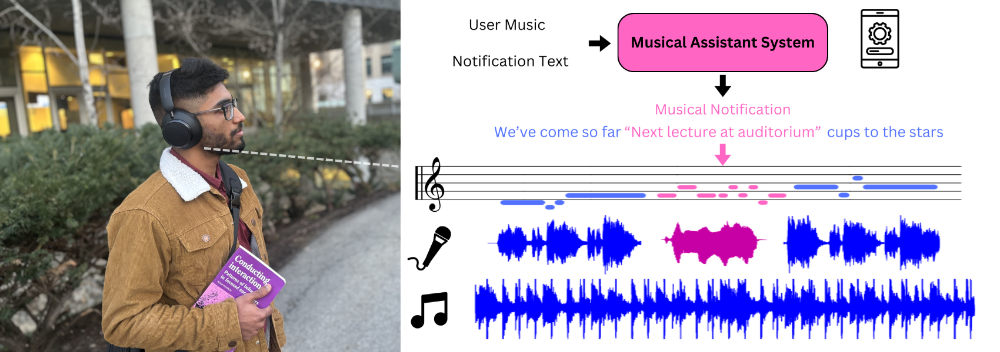
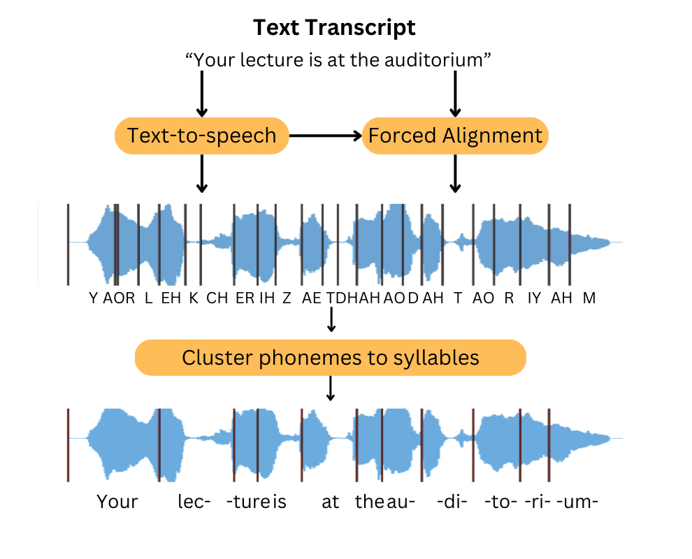
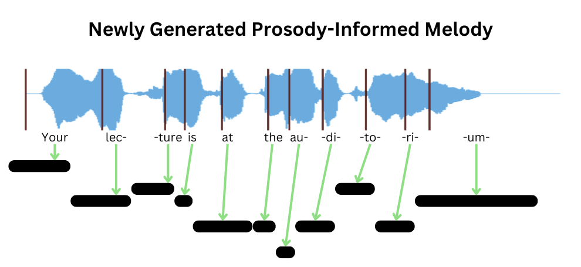
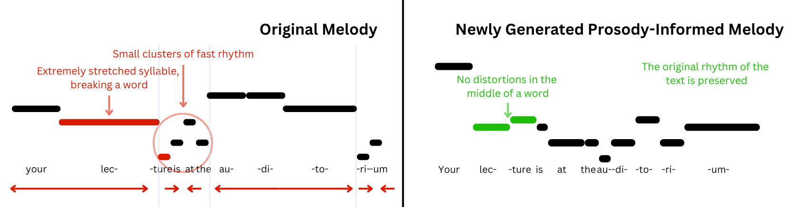
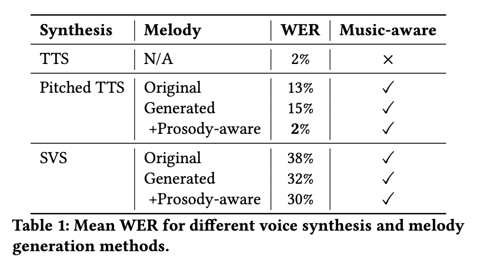
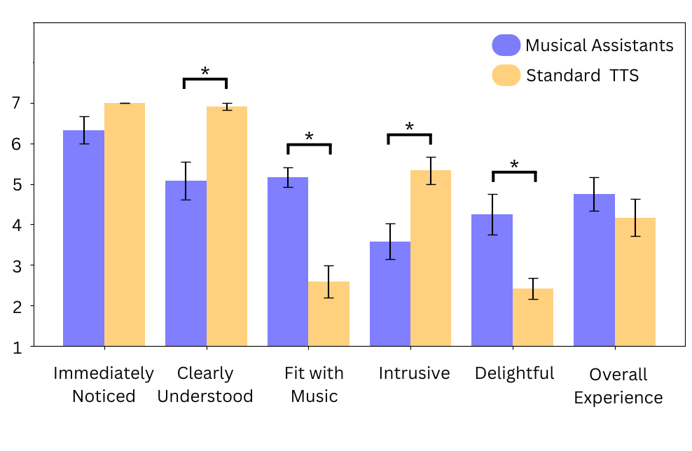

UIST 2024 — ACM Symposium on User Interface Software and Technology

We contribute a novel technique for generating new melodies in pop songs with precise rhythmic control. We instantiate this technique in a system that enables conversational agents (e.g., Siri and Google Maps) to sing over background music while preserving both the composition of the current song and the prosody of spoken notifications. Our evaluations show that this approach improves the intelligibility of sung messages.
Get Lucky — Daft Punk
"your flight to New York is boarding now"
Disturbia — Rihanna
"trash pickup at 10 am today"
Crawling — Linkin Park
"assignment due tonight"
Spain — Chick Corea
"new meeting invitation"
Take On Me — a-ha
Wake Me Up — Avicii
Don't You Worry Child — Swedish House Mafia
Numb — Linkin Park
Sad Machine — Porter Robinson
Them Changes — Thundercat
Canon in D — Pachelbel
The Legend of Zelda
We contribute a method for generating new melodies that fit both the musical context and the natural rhythm of the spoken text.
To align with the musical context, we use the Anticipatory Music Transformer to inpaint a new melody from the surrounding music. It models a distribution \(p_\theta(e \mid c)\) over a sequence of event notes \(e\) given a disjoint sequence of control notes \(c\), where each note is a tuple \(n = \langle n^{\text{time}}, n^{\text{dur}}, n^{\text{ins}}, n^{\text{pitch}}\rangle\) of start time, duration, instrument, and pitch, factorized autoregressively:
We fine-tune it for our setting, where the conditioning contexts are the song's melody \(M\), harmony \(H\), and click track \(C\), taken from the Hooktheory dataset. Given a span in the middle of the melody, from \(t_b\) to \(t_e\), we fine-tune the model to generate that span, \(M_{[t_b,\,t_e)}\), from \(M_{\lt t_b} \cup M_{\ge t_e} \cup H \cup C\). The melody in the span is thus conditioned on all notes from all instruments in the past, as well as all notes up to \(X = 5\) seconds into the future. With anticipation, this corresponds to controls and events
To align with the spoken rhythm, we first estimate the message's prosody: we synthesize the text with TTS and use forced alignment to estimate the onset time \(\hat{t}_i\) of each syllable. Because stretching a single syllable across many notes hurts intelligibility, we generate one note per syllable, rejecting any sample with fewer notes than syllables. The syllable onsets give timings under which the text sounds natural, so we constrain each generated note to fall within \(\pm U\) of them, where \(U = \tfrac{60}{4\,\mathrm{BPM}}\) is the length of one sixteenth note. We sample with two inference-time constraints on the start \(n_i^{\text{time}}\) and duration \(n_i^{\text{dur}}\) of each note relative to the syllable onset \(\hat{t}_i\):



To synthesize the final audio, we modify the TTS output to match the pitch and duration of the generated melody. Using the same syllable onsets, we remap the pitch and duration of each syllable so they match the melody, one syllable per note. We chose this speech-modification approach over direct singing voice synthesis, which showed significant intelligibility issues in our preliminary experiments.
Our approach vs. baseline
Melody generation: prosody-aware generation vs. original melody
Holding the synthesis method fixed, we compare melodies. Our prosody-aware generation preserves the natural rhythm of the spoken text, while singing the notification to the song's original melody distorts the words.
Voice synthesis: our synthesis approach vs. SVS
Holding the melody fixed, we compare two ways to make the voice sing: our synthesis approach versus singing voice conversion. Our approach stayed more intelligible.
We evaluated both objective intelligibility and subjective experience. Objectively, we measured the word error rate (WER) of delivered notifications by transcribing them with automatic speech recognition: reusing or freshly generating a melody hurts intelligibility, but adding prosody-aware melody generation brings pitched text-to-speech down to 2% WER, on par with plain, non-musical speech. Subjectively, in a study with 12 participants, musical notifications were rated as fitting better with the music, less intrusive, and more delightful than standard TTS (all significant), while remaining noticeable and comparable in overall experience.


@inproceedings{wang2024musicaware,
title = {Towards Music-Aware Virtual Assistants},
author = {Wang, Alexander and Lindlbauer, David and Donahue, Chris},
booktitle = {Proceedings of the 37th Annual ACM Symposium on User Interface Software and Technology},
year = {2024},
doi = {10.1145/3654777.3676416}
}